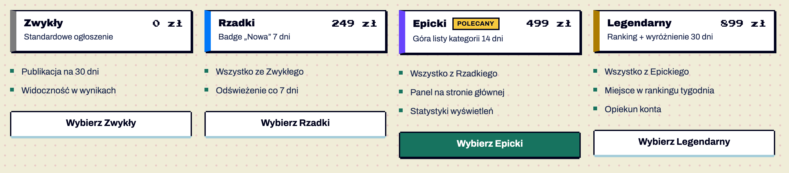
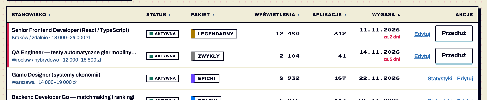
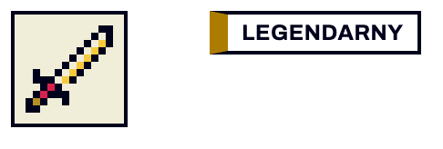

Komponenty / Pakiet i znacznik
Pakiet (tier) i znacznik pakietu
stabilny Pakiet i znacznik pakietu / rzadkości · od 1.0
wycofywany Rzadkość jako badge z kwadratem · od — — zastąpione: .tier-tag (§6.9), usunięcie w 2.0
Oferta handlowa jako rzadkość przedmiotu z gry: Legendarny / Epicki / Rzadki / Zwykły. Karta pakietu (.tier) — cennik; znacznik (.tier-tag) — w tabeli, karcie, koszyku. Potwierdzone w dokumentacji S01 §6.9, v1.2.




Anatomia i komponenty składowe
| Część / rola | Wymagana / opcjonalna | Składnik / źródło | Co można zmienić / status |
|---|---|---|---|
| kontener z lewą krawędzią 10 px w kolorze tieru | wymagany | .tier / .tier-tag | Potwierdzone w dokumentacji |
| nazwa | wymagana | — | kolor zawsze z nazwą Potwierdzone w dokumentacji |
| cena | wymagana w karcie | pixel-sm | Potwierdzone w dokumentacji |
| opis | wymagany w karcie | — | Potwierdzone w dokumentacji |
| badge „Polecany” | opcjonalny | K02 sm przy nazwie | Potwierdzone w dokumentacji S10 |
Warianty i zastosowanie
| Oś | Wartość | Kiedy użyć | Co się zmienia | Ograniczenia / status / źródło |
|---|---|---|---|---|
| tier | Legendarny / Epicki / Rzadki / Zwykły | poziom pakietu | kolor krawędzi | Potwierdzone w dokumentacji |
| forma | karta | cennik (S10) | cena + opis + lista + przycisk | Potwierdzone w dokumentacji |
| forma | znacznik 24 px | tabela (S16) | tylko nazwa | Potwierdzone w dokumentacji |
| forma | badge z kwadratem | rzadkość w sklepie (S13) | kwadrat 8 px zamiast krawędzi | odrzucony — sklep używa .tier-tag w kartach i koszyku od v1.6 (decyzja 2026-11-10, wariant A) Potwierdzone w dokumentacji |
Zachowanie, treści i lokalizacja
Pakiety w tabeli sortują się po randze (data-sort-value) Potwierdzone w dokumentacji.
Zalecane i niewskazane
| Zalecane — przykład | Niewskazane — przykład | Powód / status / źródło |
|---|---|---|
| kolor + nazwa | sam kolorowy pasek | WCAG 1.4.1 Potwierdzone w dokumentacji |
| jeden przycisk główny przy polecanym | główny przy każdym pakiecie | Potwierdzone w dokumentacji |
| rzadkość zawsze jako .tier-tag (karta, tabela, koszyk) | badge z kwadratem 8 px | Potwierdzone w dokumentacji decyzja 2026-11-10 |
Tokeny i style
| Zastosowanie | Token | Tryb / wariant | Wartość | Źródło | Status |
|---|---|---|---|---|---|
| krawędź | --tier-* | #AC7C00 / #6844FC / #0078F8 / #7C7C7C | S01 | Potwierdzone w dokumentacji |
Wymiary, odległości i układ
| Elementy / krawędzie | Wariant | Wartość / relacja | Token | Reguła / źródło / dokładność |
|---|---|---|---|---|
| krawędź | — | 10 px | — | Potwierdzone w dokumentacji |
| karta | — | padding 10×12 px, cień 2 px | — | Potwierdzone w dokumentacji |
| znacznik | — | 24 px wysokości | — | Potwierdzone w dokumentacji |
Typografia
| Rola tekstu | Styl | Font / weight | Rozmiar | Interlinia | Tracking | Kolor / zachowanie / status |
|---|---|---|---|---|---|---|
| nazwa | — | Archivo 900 | 16 | — | — | Potwierdzone w dokumentacji |
| cena | pixel-sm | Press Start 2P | 12 | 1.8 | — | Potwierdzone w dokumentacji |
Przykład na żywo
Ta sama sekcja co w examples/komponenty.html — działa na systemie 1.11.0. Przełącz motyw w nagłówku, żeby zobaczyć tryb ciemny.
Podium, pakiety, fakty
Podium to „głośny” element ekranu rankingu — tylko jeden taki element na ekran. Kolejność DOM 1-2-3.
- KosmoKret98 4501
- PikselBaba91 2002
- Łazik87 0153
- Widełki
- 22 000–28 000 zł
- Tryb
- Hybrydowo
- Poziom
- Senior
- Umowa
- B2B
Kod przykładu
<section class="ex" aria-labelledby="h-rank">
<h2 id="h-rank">Podium, pakiety, fakty</h2>
<p>Podium to „głośny” element ekranu rankingu — tylko jeden taki element na ekran. Kolejność DOM 1-2-3.</p>
<div class="grid3">
<ol class="podium" aria-label="Podium">
<li class="podium-1"><span class="avatar avatar-xl" style="--av:var(--avatar-2)" aria-hidden="true">KK</span><span>KosmoKret</span><span class="podium-pts">98 450</span><span class="podium-step">1</span></li>
<li class="podium-2"><span class="avatar avatar-xl" style="--av:var(--avatar-3)" aria-hidden="true">PB</span><span>PikselBaba</span><span class="podium-pts">91 200</span><span class="podium-step">2</span></li>
<li class="podium-3"><span class="avatar avatar-xl" style="--av:var(--avatar-1)" aria-hidden="true">ŁZ</span><span>Łazik</span><span class="podium-pts">87 015</span><span class="podium-step">3</span></li>
</ol>
<div class="stack" style="display:grid;gap:12px">
<div class="tier tier-legendary"><span class="tier-name">Legendarny</span><span class="tier-price">899 zł</span><span class="tier-desc">Podium + wyróżniony panel 30 dni</span></div>
<div class="tier tier-epic"><span class="tier-name">Epicki <span class="badge badge-sm">Polecany</span></span><span class="tier-price">499 zł</span><span class="tier-desc">Wyróżnienie w kategorii 14 dni</span></div>
<div class="tier tier-rare"><span class="tier-name">Rzadki</span><span class="tier-price">249 zł</span><span class="tier-desc">Odświeżenie co 7 dni</span></div>
</div>
<dl class="facts">
<div><dt>Widełki</dt><dd class="num">22 000–28 000 zł</dd></div>
<div><dt>Tryb</dt><dd>Hybrydowo</dd></div>
<div><dt>Poziom</dt><dd>Senior</dd></div>
<div><dt>Umowa</dt><dd>B2B</dd></div>
</dl>
</div>
</section>Właściwości i atrybuty
| Właściwość / atrybut | Typ | Wartości pokazane / opisane | Domyślna | Efekt i zastosowanie | Zależności / status / źródło |
|---|---|---|---|---|---|
| tier | enum | legendary, epic, rare, common | — | kolor | Potwierdzone w dokumentacji |
| cena | liczba + waluta | 0, 249, 499, 899 zł | — | — | Potwierdzone w dokumentacji |
| polecany | boolean | — | nie | badge + przycisk główny | Potwierdzone w dokumentacji |
Specyfikacja (design.md §6.9)
Karta z ramką 2 px, cieniem 2 px i lewą krawędzią 10 px w kolorze tieru. Nazwa (Archivo 16/900), cena (pixel-sm, prawa strona), opis (small). Nazwy: Legendarny / Epicki / Rzadki / Zwykły. Kolor zawsze z nazwą.
<div class="tier tier-legendary"><span class="tier-name">Legendarny</span><span class="tier-price">899 zł</span><span class="tier-desc">Podium + wyróżniony panel 30 dni</span></div>Znacznik tieru (.tier-tag .tier-legendary|epic|rare|common) — kompaktowa wersja do kart, wierszy tabeli i koszyka: wysokość 24 px, ramka 2 px, lewa krawędź 10 px w kolorze tieru, nazwa wersalikami 12/700.
<span class="tier-tag tier-epic">Epicki</span>Rzadkość przedmiotu (v1.6): zawsze .tier-tag — w karcie sklepu, tabeli i koszyku. Badge z kwadratem 8 px (z pierwszej wersji sklepu) jest odrzucony: kwadrat słabo odróżnia Epicki od Rzadkiego, a cień badge’a sugeruje klikalność.
Cel: WCAG 2.2 AA. Statyczne materiały i testy automatyczne w Chrome nie dowodzą zgodności — miejsca oznaczone „Do testu we wdrożeniu” wymagają testu z czytnikiem ekranu (design.md §0.6).
| Obszar | Ustalenie lub wymaganie | Dowód / status | Kryterium / wzorzec | Jak sprawdzić |
|---|---|---|---|---|
| kolor | krawędź 3.7–5.5:1 na bieli + nazwa | Potwierdzone w dokumentacji | WCAG 1.4.11 (AA), 1.4.1 | — |
Źródła
S01 §6.9; S10, S13, S16.